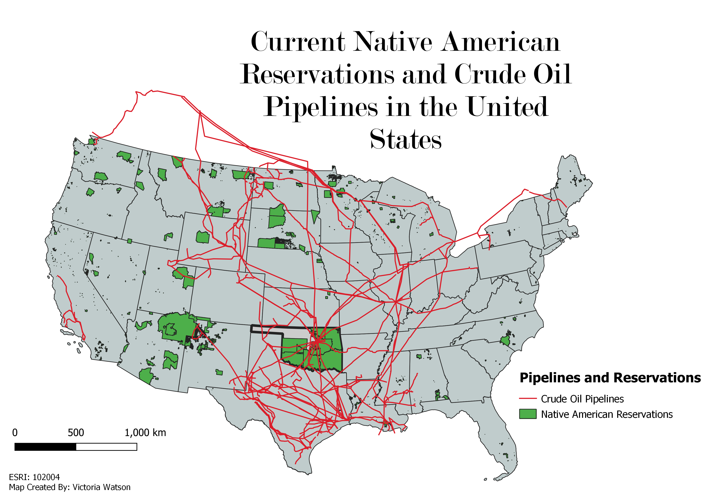

This project uses vector geoprocessing analysis to answer the following real-world question: Is there overlap between recognized Native American reservations and crude oil pipelines?
Prior to geoprocessing, I found several different data sets that I would need to use to answer my research question. I knew that I wanted to investigate pipelines on tribal lands. I looked up articles regarding the issue and found that there was a supreme court case that recently decided that tribes in Oklahoma will have a say over gas and oil running through their land. Because of this court case, I thought I would focus primarily on Oklahoma to visualize the issue. The first map is an overview of reservations and crude oil pipelines across the contiguous United States. I used a data set showing crude oil pipelines, another to show reservation land, and a shapefile of the States.
In order to narrow down the data, I chose to use a buffer to create the boundary of Oklahoma using selected features of the U.S. shapefile. I then used an intersection between reservations and the buffer to create a layer that only showed reservations within Oklahoma. After that, I created another intersection between that new intersection layer and the crude oil pipelines. I created a duplicate layer of the original pipeline-Oklahoma intersection to show the parts of the crude oil pipelines that are not intersecting with the reservations. This helped show how much of the pipelines in Oklahoma are on tribal land.